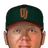

Franchise record book · FBL
Orlando Juicers
Seasons covered: 2002–2002. Only games played for this franchise count.
This club has no pre-2002 history in the export, so its record book is the 2002 season to date. Rate records need 3.1 PA or 1 inning per team game.
Home runs
| # | Player | Season | Team | Home runs |
|---|---|---|---|---|
| #1 | 2002 (FBL) |  Orlando Juicers Orlando Juicers | 8 | |
| #2 | 2002 (FBL) | Orlando Juicers | 7 | |
| #3 | 2002 (FBL) | Orlando Juicers | 6 | |
| #4 | 2002 (FBL) | Orlando Juicers | 4 | |
| #5 | 2002 (FBL) | Orlando Juicers | 4 | |
| #6 | 2002 (FBL) | Orlando Juicers | 3 | |
| #7 | 2002 (FBL) | Orlando Juicers | 2 | |
| #8 | 2002 (FBL) | Orlando Juicers | 2 | |
| #9 | 2002 (FBL) | Orlando Juicers | 1 | |
| #10 | 2002 (FBL) | Orlando Juicers | 1 |
Hits
| # | Player | Season | Team | Hits |
|---|---|---|---|---|
| #1 | 2002 (FBL) | Orlando Juicers | 56 | |
| #2 | 2002 (FBL) | Orlando Juicers | 43 | |
| #3 | 2002 (FBL) | Orlando Juicers | 41 | |
| #4 | 2002 (FBL) | Orlando Juicers | 38 | |
| #5 | 2002 (FBL) | Orlando Juicers | 36 | |
| #6 | 2002 (FBL) | Orlando Juicers | 36 | |
| #7 | 2002 (FBL) | Orlando Juicers | 24 | |
| #8 | 2002 (FBL) | Orlando Juicers | 22 | |
| #9 | 2002 (FBL) | Orlando Juicers | 19 | |
| #10 | 2002 (FBL) | Orlando Juicers | 19 |
RBI
| # | Player | Season | Team | RBI |
|---|---|---|---|---|
| #1 | 2002 (FBL) | Orlando Juicers | 24 | |
| #2 | 2002 (FBL) | Orlando Juicers | 22 | |
| #3 | 2002 (FBL) | Orlando Juicers | 20 | |
| #4 | 2002 (FBL) | Orlando Juicers | 15 | |
| #5 | 2002 (FBL) | Orlando Juicers | 15 | |
| #6 | 2002 (FBL) | Orlando Juicers | 12 | |
| #7 | 2002 (FBL) | Orlando Juicers | 12 | |
| #8 | 2002 (FBL) | Orlando Juicers | 12 | |
| #9 | 2002 (FBL) | Orlando Juicers | 11 | |
| #10 | 2002 (FBL) | Orlando Juicers | 10 |
Runs
| # | Player | Season | Team | Runs |
|---|---|---|---|---|
| #1 | 2002 (FBL) | Orlando Juicers | 26 | |
| #2 | 2002 (FBL) | Orlando Juicers | 26 | |
| #3 | 2002 (FBL) | Orlando Juicers | 26 | |
| #4 | 2002 (FBL) | Orlando Juicers | 17 | |
| #5 | 2002 (FBL) | Orlando Juicers | 15 | |
| #6 | 2002 (FBL) | Orlando Juicers | 14 | |
| #7 | 2002 (FBL) | Orlando Juicers | 12 | |
| #8 | 2002 (FBL) | Orlando Juicers | 9 | |
| #9 | 2002 (FBL) | Orlando Juicers | 8 | |
| #10 | 2002 (FBL) | Orlando Juicers | 7 |
Stolen bases
| # | Player | Season | Team | Stolen bases |
|---|---|---|---|---|
| #1 | 2002 (FBL) | Orlando Juicers | 16 | |
| #2 | 2002 (FBL) | Orlando Juicers | 7 | |
| #3 | 2002 (FBL) | Orlando Juicers | 4 | |
| #4 | 2002 (FBL) | Orlando Juicers | 3 | |
| #5 | 2002 (FBL) | Orlando Juicers | 2 | |
| #6 | 2002 (FBL) | Orlando Juicers | 2 | |
| #7 | 2002 (FBL) | Orlando Juicers | 1 | |
| #8 | 2002 (FBL) | Orlando Juicers | 1 | |
| #9 | 2002 (FBL) | Orlando Juicers | 1 | |
| #10 | 2002 (FBL) | Orlando Juicers | 0 |
Doubles
| # | Player | Season | Team | Doubles |
|---|---|---|---|---|
| #1 | 2002 (FBL) | Orlando Juicers | 11 | |
| #2 | 2002 (FBL) | Orlando Juicers | 11 | |
| #3 | 2002 (FBL) | Orlando Juicers | 9 | |
| #4 | 2002 (FBL) | Orlando Juicers | 8 | |
| #5 | 2002 (FBL) | Orlando Juicers | 7 | |
| #6 | 2002 (FBL) | Orlando Juicers | 6 | |
| #7 | 2002 (FBL) | Orlando Juicers | 6 | |
| #8 | 2002 (FBL) | Orlando Juicers | 6 | |
| #9 | 2002 (FBL) | Orlando Juicers | 5 | |
| #10 | 2002 (FBL) | Orlando Juicers | 4 |
Triples
| # | Player | Season | Team | Triples |
|---|---|---|---|---|
| #1 | 2002 (FBL) | Orlando Juicers | 2 | |
| #2 | 2002 (FBL) | Orlando Juicers | 2 | |
| #3 | 2002 (FBL) | Orlando Juicers | 1 | |
| #4 | 2002 (FBL) | Orlando Juicers | 1 | |
| #5 | 2002 (FBL) | Orlando Juicers | 1 | |
| #6 | 2002 (FBL) | Orlando Juicers | 0 | |
| #7 | 2002 (FBL) | Orlando Juicers | 0 | |
| #8 | 2002 (FBL) | Orlando Juicers | 0 | |
| #9 | 2002 (FBL) | Orlando Juicers | 0 | |
| #10 | 2002 (FBL) | Orlando Juicers | 0 |
Walks
| # | Player | Season | Team | Walks |
|---|---|---|---|---|
| #1 | 2002 (FBL) | Orlando Juicers | 18 | |
| #2 | 2002 (FBL) | Orlando Juicers | 13 | |
| #3 | 2002 (FBL) | Orlando Juicers | 13 | |
| #4 | 2002 (FBL) | Orlando Juicers | 12 | |
| #5 | 2002 (FBL) | Orlando Juicers | 9 | |
| #6 | 2002 (FBL) | Orlando Juicers | 8 | |
| #7 | 2002 (FBL) | Orlando Juicers | 7 | |
| #8 | 2002 (FBL) | Orlando Juicers | 7 | |
| #9 | 2002 (FBL) | Orlando Juicers | 6 | |
| #10 | 2002 (FBL) | Orlando Juicers | 5 |
Total bases
| # | Player | Season | Team | Total bases |
|---|---|---|---|---|
| #1 | 2002 (FBL) | Orlando Juicers | 75 | |
| #2 | 2002 (FBL) | Orlando Juicers | 70 | |
| #3 | 2002 (FBL) | Orlando Juicers | 70 | |
| #4 | 2002 (FBL) | Orlando Juicers | 66 | |
| #5 | 2002 (FBL) | Orlando Juicers | 54 | |
| #6 | 2002 (FBL) | Orlando Juicers | 49 | |
| #7 | 2002 (FBL) | Orlando Juicers | 38 | |
| #8 | 2002 (FBL) | Orlando Juicers | 35 | |
| #9 | 2002 (FBL) | Orlando Juicers | 34 | |
| #10 | 2002 (FBL) | Orlando Juicers | 31 |
Batting average qualified
| # | Player | Season | Team | Batting average |
|---|---|---|---|---|
| #1 | 2002 (FBL) | Orlando Juicers | .354 | |
| #2 | 2002 (FBL) | Orlando Juicers | .305 | |
| #3 | 2002 (FBL) | Orlando Juicers | .286 | |
| #4 | 2002 (FBL) | Orlando Juicers | .273 | |
| #5 | 2002 (FBL) | Orlando Juicers | .272 | |
| #6 | 2002 (FBL) | Orlando Juicers | .259 |
On-base % qualified
| # | Player | Season | Team | On-base % |
|---|---|---|---|---|
| #1 | 2002 (FBL) | Orlando Juicers | .386 | |
| #2 | 2002 (FBL) | Orlando Juicers | .354 | |
| #3 | 2002 (FBL) | Orlando Juicers | .338 | |
| #4 | 2002 (FBL) | Orlando Juicers | .333 | |
| #5 | 2002 (FBL) | Orlando Juicers | .321 | |
| #6 | 2002 (FBL) | Orlando Juicers | .314 |
Slugging % qualified
| # | Player | Season | Team | Slugging % |
|---|---|---|---|---|
| #1 | 2002 (FBL) | Orlando Juicers | .532 | |
| #2 | 2002 (FBL) | Orlando Juicers | .504 | |
| #3 | 2002 (FBL) | Orlando Juicers | .443 | |
| #4 | 2002 (FBL) | Orlando Juicers | .437 | |
| #5 | 2002 (FBL) | Orlando Juicers | .409 | |
| #6 | 2002 (FBL) | Orlando Juicers | .368 |
OPS qualified
| # | Player | Season | Team | OPS |
|---|---|---|---|---|
| #1 | 2002 (FBL) | Orlando Juicers | .865 | |
| #2 | 2002 (FBL) | Orlando Juicers | .829 | |
| #3 | 2002 (FBL) | Orlando Juicers | .818 | |
| #4 | 2002 (FBL) | Orlando Juicers | .758 | |
| #5 | 2002 (FBL) | Orlando Juicers | .747 | |
| #6 | 2002 (FBL) | Orlando Juicers | .722 |
WAR (OOTP)
| # | Player | Season | Team | WAR (OOTP) |
|---|---|---|---|---|
| #1 | 2002 (FBL) | Orlando Juicers | 1.5 | |
| #2 | 2002 (FBL) | Orlando Juicers | 1.0 | |
| #3 | 2002 (FBL) | Orlando Juicers | 0.8 | |
| #4 | 2002 (FBL) | Orlando Juicers | 0.6 | |
| #5 | 2002 (FBL) | Orlando Juicers | 0.3 | |
| #6 | 2002 (FBL) | Orlando Juicers | 0.2 | |
| #7 | 2002 (FBL) | Orlando Juicers | 0.2 | |
| #8 | 2002 (FBL) | Orlando Juicers | 0.1 | |
| #9 | 2002 (FBL) | Orlando Juicers | 0.1 | |
| #10 | 2002 (FBL) | Orlando Juicers | 0.0 |
Wins
| # | Player | Season | Team | Wins |
|---|---|---|---|---|
| #1 | 2002 (FBL) | Orlando Juicers | 3 | |
| #2 | 2002 (FBL) | Orlando Juicers | 3 | |
| #3 | 2002 (FBL) | Orlando Juicers | 2 | |
| #4 | 2002 (FBL) | Orlando Juicers | 2 | |
| #5 | 2002 (FBL) | Orlando Juicers | 2 | |
| #6 | 2002 (FBL) | Orlando Juicers | 1 | |
| #7 | 2002 (FBL) | Orlando Juicers | 1 | |
| #8 | 2002 (FBL) | Orlando Juicers | 1 | |
| #9 | 2002 (FBL) | Orlando Juicers | 1 | |
| #10 | 2002 (FBL) | Orlando Juicers | 0 |
Strikeouts
| # | Player | Season | Team | Strikeouts |
|---|---|---|---|---|
| #1 | 2002 (FBL) | Orlando Juicers | 43 | |
| #2 | 2002 (FBL) | Orlando Juicers | 30 | |
| #3 | 2002 (FBL) | Orlando Juicers | 23 | |
| #4 | 2002 (FBL) | Orlando Juicers | 19 | |
| #5 | 2002 (FBL) | Orlando Juicers | 16 | |
| #6 | 2002 (FBL) | Orlando Juicers | 15 | |
| #7 | 2002 (FBL) | Orlando Juicers | 15 | |
| #8 | 2002 (FBL) | Orlando Juicers | 11 | |
| #9 | 2002 (FBL) | Orlando Juicers | 11 | |
| #10 | 2002 (FBL) | Orlando Juicers | 9 |
Saves
| # | Player | Season | Team | Saves |
|---|---|---|---|---|
| #1 | 2002 (FBL) | Orlando Juicers | 9 | |
| #2 | 2002 (FBL) | Orlando Juicers | 2 | |
| #3 | 2002 (FBL) | Orlando Juicers | 0 | |
| #4 | 2002 (FBL) | Orlando Juicers | 0 | |
| #5 | 2002 (FBL) | Orlando Juicers | 0 | |
| #6 | 2002 (FBL) | Orlando Juicers | 0 | |
| #7 | 2002 (FBL) | Orlando Juicers | 0 | |
| #8 | 2002 (FBL) | Orlando Juicers | 0 | |
| #9 | 2002 (FBL) | Orlando Juicers | 0 | |
| #10 | 2002 (FBL) | Orlando Juicers | 0 |
Innings
| # | Player | Season | Team | Innings |
|---|---|---|---|---|
| #1 | 2002 (FBL) | Orlando Juicers | 63.1 | |
| #2 | 2002 (FBL) | Orlando Juicers | 44.2 | |
| #3 | 2002 (FBL) | Orlando Juicers | 42.2 | |
| #4 | 2002 (FBL) | Orlando Juicers | 42.0 | |
| #5 | 2002 (FBL) | Orlando Juicers | 31.0 | |
| #6 | 2002 (FBL) | Orlando Juicers | 22.0 | |
| #7 | 2002 (FBL) | Orlando Juicers | 18.1 | |
| #8 | 2002 (FBL) | Orlando Juicers | 16.2 | |
| #9 | 2002 (FBL) | Orlando Juicers | 14.2 | |
| #10 | 2002 (FBL) | Orlando Juicers | 13.2 |
Complete games
| # | Player | Season | Team | Complete games |
|---|---|---|---|---|
| #1 | 2002 (FBL) | Orlando Juicers | 1 | |
| #2 | 2002 (FBL) | Orlando Juicers | 0 | |
| #3 | 2002 (FBL) | Orlando Juicers | 0 | |
| #4 | 2002 (FBL) | Orlando Juicers | 0 | |
| #5 | 2002 (FBL) | Orlando Juicers | 0 | |
| #6 | 2002 (FBL) | Orlando Juicers | 0 | |
| #7 | 2002 (FBL) | Orlando Juicers | 0 | |
| #8 | 2002 (FBL) | Orlando Juicers | 0 | |
| #9 | 2002 (FBL) | Orlando Juicers | 0 | |
| #10 |  Mike Oquist • | 2002 (FBL) | Orlando Juicers | 0 |
Shutouts
| # | Player | Season | Team | Shutouts |
|---|---|---|---|---|
| #1 | 2002 (FBL) | Orlando Juicers | 0 | |
| #2 | 2002 (FBL) | Orlando Juicers | 0 | |
| #3 | 2002 (FBL) | Orlando Juicers | 0 | |
| #4 | 2002 (FBL) | Orlando Juicers | 0 | |
| #5 | 2002 (FBL) | Orlando Juicers | 0 | |
| #6 | 2002 (FBL) | Orlando Juicers | 0 | |
| #7 | 2002 (FBL) | Orlando Juicers | 0 | |
| #8 | 2002 (FBL) | Orlando Juicers | 0 | |
| #9 | 2002 (FBL) | Orlando Juicers | 0 | |
| #10 | Mike Oquist • | 2002 (FBL) | Orlando Juicers | 0 |
ERA qualified
| # | Player | Season | Team | ERA |
|---|---|---|---|---|
| #1 | 2002 (FBL) | Orlando Juicers | 3.69 | |
| #2 | 2002 (FBL) | Orlando Juicers | 4.85 | |
| #3 | 2002 (FBL) | Orlando Juicers | 5.64 | |
| #4 | 2002 (FBL) | Orlando Juicers | 6.00 |
WHIP qualified
| # | Player | Season | Team | WHIP |
|---|---|---|---|---|
| #1 | 2002 (FBL) | Orlando Juicers | 1.31 | |
| #2 | 2002 (FBL) | Orlando Juicers | 1.34 | |
| #3 | 2002 (FBL) | Orlando Juicers | 1.48 | |
| #4 | 2002 (FBL) | Orlando Juicers | 1.76 |
K/9 qualified
| # | Player | Season | Team | K/9 |
|---|---|---|---|---|
| #1 | 2002 (FBL) | Orlando Juicers | 6.3 | |
| #2 | 2002 (FBL) | Orlando Juicers | 6.1 | |
| #3 | 2002 (FBL) | Orlando Juicers | 4.6 | |
| #4 | 2002 (FBL) | Orlando Juicers | 4.1 |
WAR (OOTP)
| # | Player | Season | Team | WAR (OOTP) |
|---|---|---|---|---|
| #1 | 2002 (FBL) | Orlando Juicers | 1.6 | |
| #2 | 2002 (FBL) | Orlando Juicers | 0.7 | |
| #3 | 2002 (FBL) | Orlando Juicers | 0.4 | |
| #4 | 2002 (FBL) | Orlando Juicers | 0.4 | |
| #5 | 2002 (FBL) | Orlando Juicers | 0.3 | |
| #6 | 2002 (FBL) | Orlando Juicers | 0.2 | |
| #7 | 2002 (FBL) | Orlando Juicers | 0.1 | |
| #8 | 2002 (FBL) | Orlando Juicers | 0.1 | |
| #9 | 2002 (FBL) | Orlando Juicers | 0.1 | |
| #10 | 2002 (FBL) | Orlando Juicers | 0.0 |
Home runs
| # | Player | Years | Home runs |
|---|---|---|---|
| #1 | 1999–02 | 8 | |
| #2 | 1987–02 | 7 | |
| #3 | 1997–02 | 6 | |
| #4 | 1989–02 | 4 | |
| #5 | 1992–02 | 4 | |
| #6 | 2000–02 | 3 | |
| #7 | 2001–02 | 2 | |
| #8 | 1993–02 | 2 | |
| #9 | 2001–02 | 1 | |
| #10 | 1996–02 | 1 |
Hits
| # | Player | Years | Hits |
|---|---|---|---|
| #1 | 2001–02 | 56 | |
| #2 | 1987–02 | 43 | |
| #3 | 1997–02 | 41 | |
| #4 | 2002–02 | 38 | |
| #5 | 1992–02 | 36 | |
| #6 | 1999–02 | 36 | |
| #7 | 2001–02 | 24 | |
| #8 | 1993–02 | 22 | |
| #9 | 1989–02 | 19 | |
| #10 | 2000–02 | 19 |
RBI
| # | Player | Years | RBI |
|---|---|---|---|
| #1 | 1987–02 | 24 | |
| #2 | 1999–02 | 22 | |
| #3 | 1997–02 | 20 | |
| #4 | 2001–02 | 15 | |
| #5 | 2002–02 | 15 | |
| #6 | 1992–02 | 12 | |
| #7 | 2001–02 | 12 | |
| #8 | 1993–02 | 12 | |
| #9 | 2001–02 | 11 | |
| #10 | 1989–02 | 10 |
Runs
| # | Player | Years | Runs |
|---|---|---|---|
| #1 | 1987–02 | 26 | |
| #2 | 2001–02 | 26 | |
| #3 | 1999–02 | 26 | |
| #4 | 1997–02 | 17 | |
| #5 | 1992–02 | 15 | |
| #6 | 2002–02 | 14 | |
| #7 | 1993–02 | 12 | |
| #8 | 1989–02 | 9 | |
| #9 | 2000–02 | 8 | |
| #10 | 2001–02 | 7 |
Stolen bases
| # | Player | Years | Stolen bases |
|---|---|---|---|
| #1 | 2001–02 | 16 | |
| #2 | 1999–02 | 7 | |
| #3 | 1987–02 | 4 | |
| #4 | 1992–02 | 3 | |
| #5 | 2002–02 | 2 | |
| #6 | 2000–02 | 2 | |
| #7 | 2001–02 | 1 | |
| #8 | 1993–02 | 1 | |
| #9 | 1992–02 | 1 | |
| #10 | 1996–02 | 0 |
Doubles
| # | Player | Years | Doubles |
|---|---|---|---|
| #1 | 2001–02 | 11 | |
| #2 | 2002–02 | 11 | |
| #3 | 1987–02 | 9 | |
| #4 | 1999–02 | 8 | |
| #5 | 2001–02 | 7 | |
| #6 | 1992–02 | 6 | |
| #7 | 2000–02 | 6 | |
| #8 | 1993–02 | 6 | |
| #9 | 1997–02 | 5 | |
| #10 | 1989–02 | 4 |
Triples
| # | Player | Years | Triples |
|---|---|---|---|
| #1 | 2001–02 | 2 | |
| #2 | 1993–02 | 2 | |
| #3 | 1997–02 | 1 | |
| #4 | 1987–02 | 1 | |
| #5 | 1999–02 | 1 | |
| #6 | 1996–02 | 0 | |
| #7 | 1989–02 | 0 | |
| #8 | 1992–02 | 0 | |
| #9 | 1988–02 | 0 | |
| #10 | 2001–02 | 0 |
Walks
| # | Player | Years | Walks |
|---|---|---|---|
| #1 | 1989–02 | 18 | |
| #2 | 1992–02 | 13 | |
| #3 | 2002–02 | 13 | |
| #4 | 1999–02 | 12 | |
| #5 | 1997–02 | 9 | |
| #6 | 2001–02 | 8 | |
| #7 | 2001–02 | 7 | |
| #8 | 1987–02 | 7 | |
| #9 | 1993–02 | 6 | |
| #10 | 1996–02 | 5 |
Total bases
| # | Player | Years | Total bases |
|---|---|---|---|
| #1 | 1987–02 | 75 | |
| #2 | 2001–02 | 70 | |
| #3 | 1999–02 | 70 | |
| #4 | 1997–02 | 66 | |
| #5 | 1992–02 | 54 | |
| #6 | 2002–02 | 49 | |
| #7 | 1993–02 | 38 | |
| #8 | 1989–02 | 35 | |
| #9 | 2000–02 | 34 | |
| #10 | 2001–02 | 31 |
Batting average min 2,000 PA
| # | Player | Years | Batting average |
|---|
On-base % min 2,000 PA
| # | Player | Years | On-base % |
|---|
Slugging % min 2,000 PA
| # | Player | Years | Slugging % |
|---|
OPS min 2,000 PA
| # | Player | Years | OPS |
|---|
WAR (OOTP)
| # | Player | Years | WAR (OOTP) |
|---|---|---|---|
| #1 | 2001–02 | 1.5 | |
| #2 | 1987–02 | 1.0 | |
| #3 | 1999–02 | 0.8 | |
| #4 | 2002–02 | 0.6 | |
| #5 | 2000–02 | 0.3 | |
| #6 | 1996–02 | 0.2 | |
| #7 | 2002–02 | 0.2 | |
| #8 | 1997–02 | 0.1 | |
| #9 | 1993–02 | 0.1 | |
| #10 | 1988–02 | 0.0 |
Wins
| # | Player | Years | Wins |
|---|---|---|---|
| #1 | 2001–02 | 3 | |
| #2 | 2002–02 | 3 | |
| #3 | 1995–02 | 2 | |
| #4 | 2001–02 | 2 | |
| #5 | 1994–02 | 2 | |
| #6 | 1987–02 | 1 | |
| #7 | 2002–02 | 1 | |
| #8 | 2001–02 | 1 | |
| #9 | 2002–02 | 1 | |
| #10 | 1995–02 | 0 |
Strikeouts
| # | Player | Years | Strikeouts |
|---|---|---|---|
| #1 | 2001–02 | 43 | |
| #2 | 2001–02 | 30 | |
| #3 | 1994–02 | 23 | |
| #4 | 2002–02 | 19 | |
| #5 | 2002–02 | 16 | |
| #6 | 2002–02 | 15 | |
| #7 | 1995–02 | 15 | |
| #8 | 1995–02 | 11 | |
| #9 | 1999–02 | 11 | |
| #10 | 2002–02 | 9 |
Saves
| # | Player | Years | Saves |
|---|---|---|---|
| #1 | 1999–02 | 9 | |
| #2 | 1995–02 | 2 | |
| #3 | 2002–02 | 0 | |
| #4 | 2001–02 | 0 | |
| #5 | 1995–02 | 0 | |
| #6 | 1987–02 | 0 | |
| #7 | 2002–02 | 0 | |
| #8 | 2002–02 | 0 | |
| #9 | 2001–02 | 0 | |
| #10 | 1994–02 | 0 |
Innings
| # | Player | Years | Innings |
|---|---|---|---|
| #1 | 2001–02 | 63.1 | |
| #2 | 1994–02 | 44.2 | |
| #3 | 2001–02 | 42.2 | |
| #4 | 2002–02 | 42.0 | |
| #5 | 2002–02 | 31.0 | |
| #6 | 2002–02 | 22.0 | |
| #7 | 2002–02 | 18.1 | |
| #8 | 2002–02 | 16.2 | |
| #9 | 1995–02 | 14.2 | |
| #10 | 1995–02 | 13.2 |
Complete games
| # | Player | Years | Complete games |
|---|---|---|---|
| #1 | 2001–02 | 1 | |
| #2 | 1995–02 | 0 | |
| #3 | 2002–02 | 0 | |
| #4 | 1995–02 | 0 | |
| #5 | 1987–02 | 0 | |
| #6 | 2002–02 | 0 | |
| #7 | 2002–02 | 0 | |
| #8 | 2001–02 | 0 | |
| #9 | 1994–02 | 0 | |
| #10 | Mike Oquist • | 1993–02 | 0 |
Shutouts
| # | Player | Years | Shutouts |
|---|---|---|---|
| #1 | 1995–02 | 0 | |
| #2 | 2002–02 | 0 | |
| #3 | 2001–02 | 0 | |
| #4 | 1995–02 | 0 | |
| #5 | 1987–02 | 0 | |
| #6 | 2002–02 | 0 | |
| #7 | 2002–02 | 0 | |
| #8 | 2001–02 | 0 | |
| #9 | 1994–02 | 0 | |
| #10 | Mike Oquist • | 1993–02 | 0 |
ERA min 500 IP
| # | Player | Years | ERA |
|---|
WHIP min 500 IP
| # | Player | Years | WHIP |
|---|
K/9 min 500 IP
| # | Player | Years | K/9 |
|---|
WAR (OOTP)
| # | Player | Years | WAR (OOTP) |
|---|---|---|---|
| #1 | 2001–02 | 1.6 | |
| #2 | 1994–02 | 0.7 | |
| #3 | 2001–02 | 0.4 | |
| #4 | 1995–02 | 0.4 | |
| #5 | 2002–02 | 0.3 | |
| #6 | 1995–02 | 0.2 | |
| #7 | 2002–02 | 0.1 | |
| #8 | 1999–02 | 0.1 | |
| #9 | 2001–02 | 0.1 | |
| #10 | 2002–02 | 0.0 |